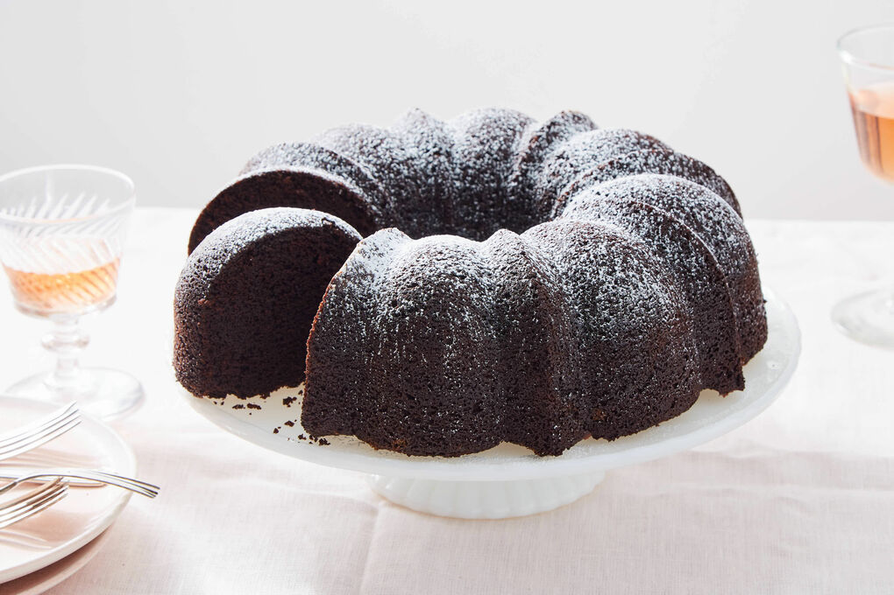
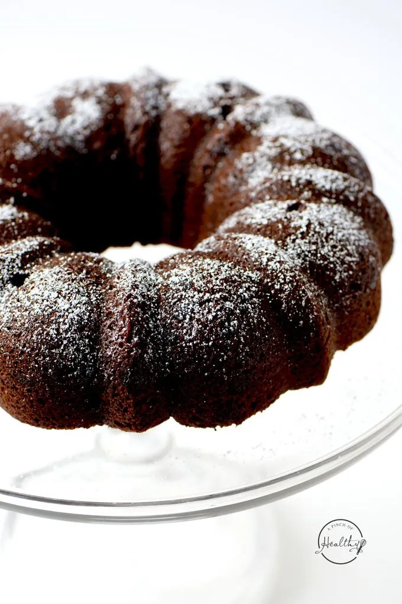
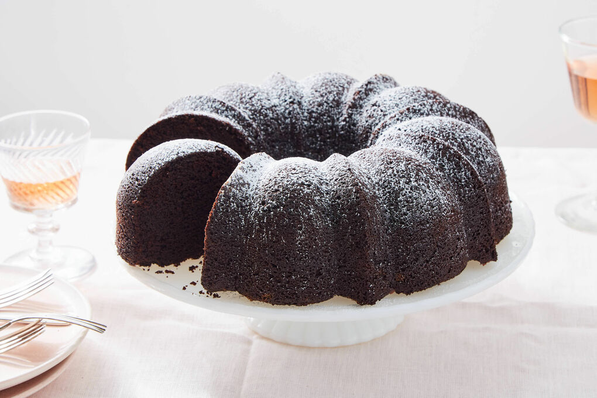
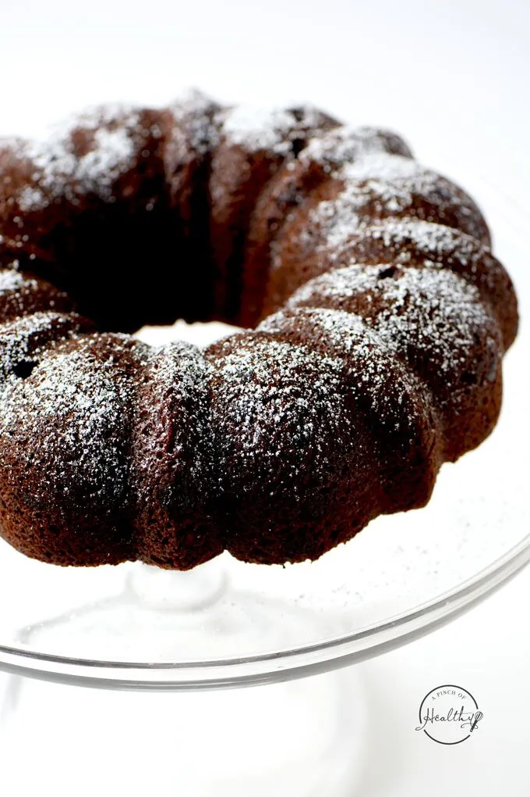
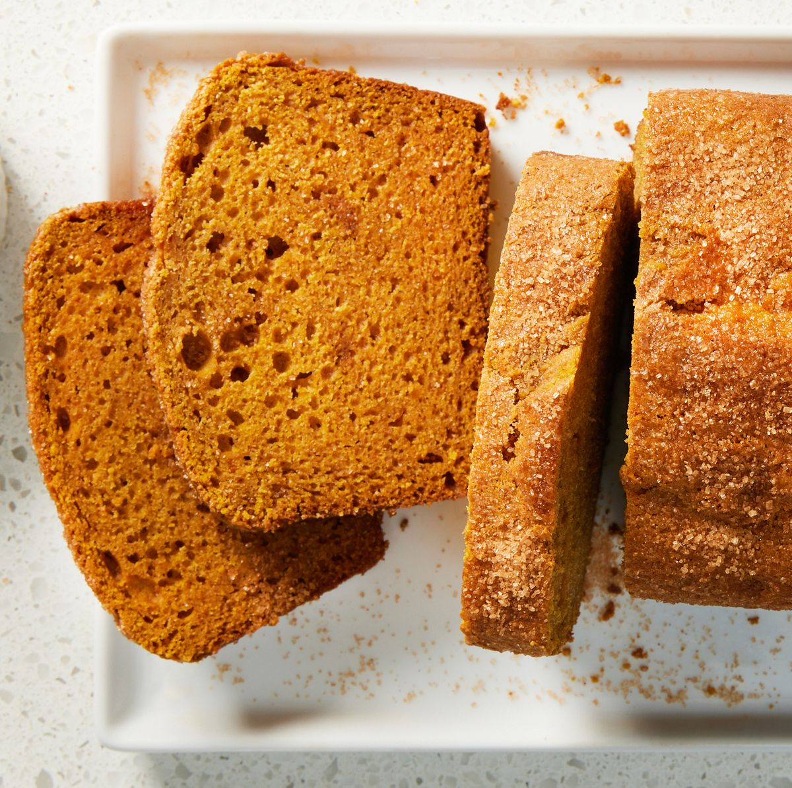
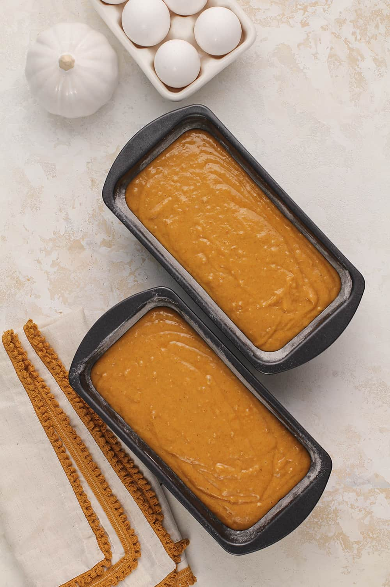
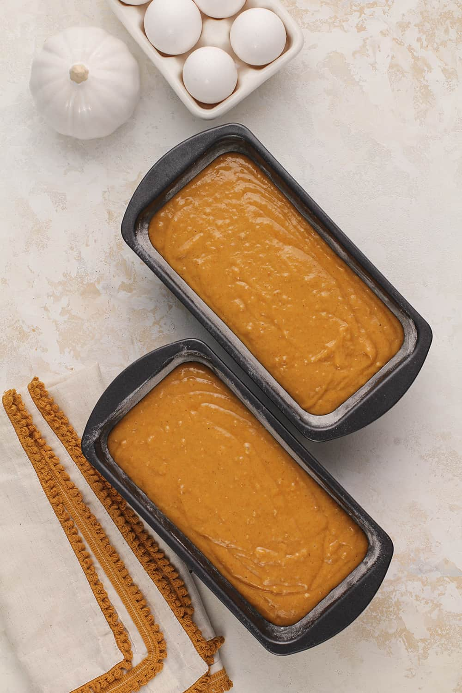
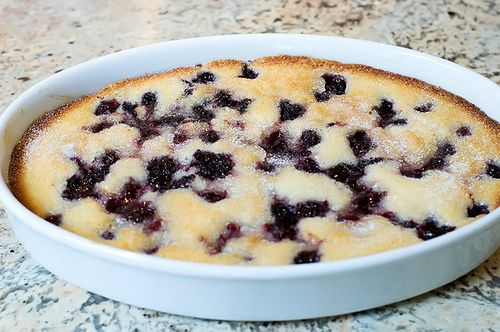
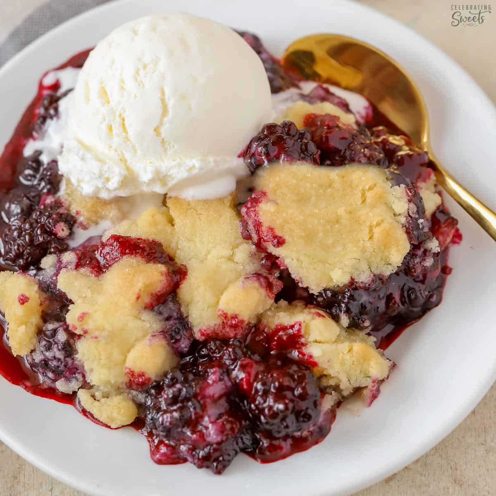
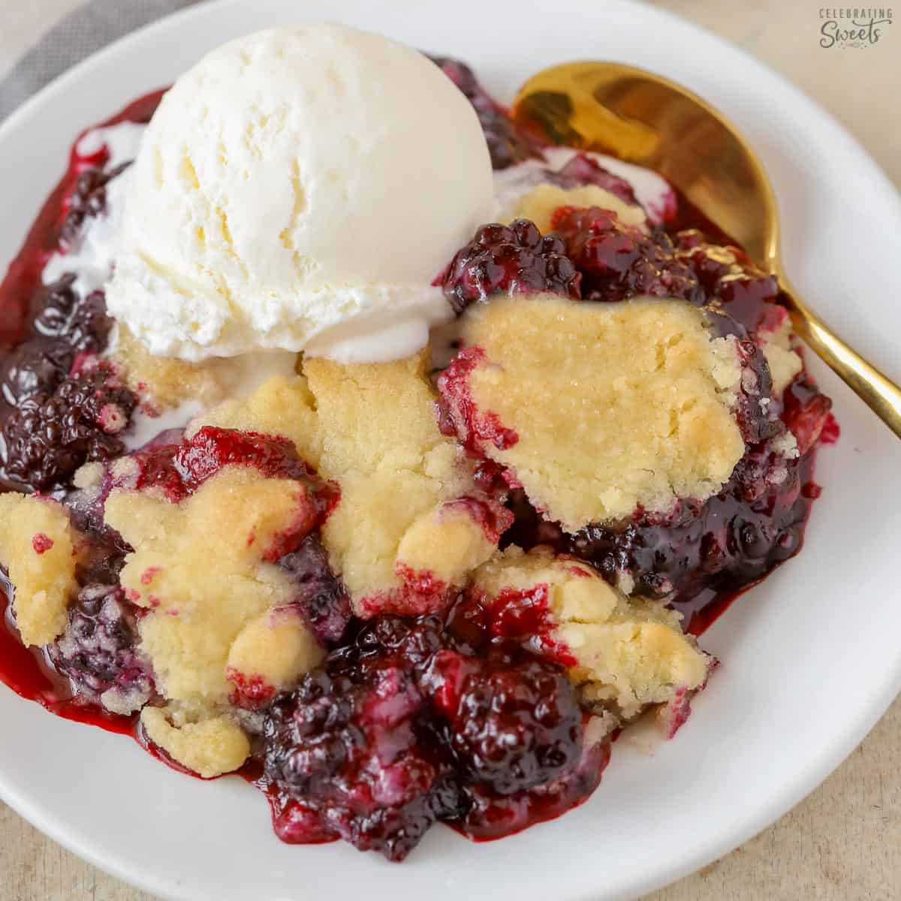

Recipes
Chocolate Bundt Cake
Indulge your sweet tooth with the decadent delight of a homemade chocolate bundt cake. This luscious dessert is a symphony of rich cocoa flavors and moist, tender crumb, creating a treat that is both visually stunning and utterly delicious. The deep, dark chocolate glaze cascading down the curves of the bundt cake adds the perfect finishing touch, making it an irresistible centerpiece for any occasion. Whether you're a seasoned baker or a novice in the kitchen, this chocolate bundt cake recipe promises to elevate your dessert game and satisfy the cravings of chocolate enthusiasts.
Photo Gallery
 



Ingredients
- 2 cups all-purpose flour
- 1 cup unsweetened cocoa powder
- 1 ½ teaspoons baking powder
- ½ teaspoon baking soda
- ½ teaspoon salt
- 1 cup unsalted butter, softened
- 2 cups granulated sugar
- 4 large eggs
- 1 teaspoon vanilla extract
- 1 ½ cups sour cream
- ½ cup strong brewed coffee, cooled
- Lots of Love
For the chocolate glaze:
- 1 cup semisweet chocolate chips
- ½ cup heavy cream
- 2 tablespoons unsalted butter
- 1 teaspoon vanilla extract
Instructions
- Preheat your oven to 350°F (175°C). Grease and flour a bundt cake pan to ensure easy release after baking.
- In a medium bowl, whisk together the flour, cocoa powder, baking powder, baking soda, and salt. Set aside.
- In a large mixing bowl, cream together the softened butter and granulated sugar until light and fluffy. Add the eggs one at a time, beating well after each addition. Stir in the vanilla extract.
- Gradually add the dry ingredients to the wet ingredients, alternating with the sour cream. Begin and end with the dry ingredients, mixing just until combined. Pour in the cooled brewed coffee and mix until the batter is smooth.
- Pour the batter into the prepared bundt pan, spreading it evenly. Bake in the preheated oven for 50-55 minutes or until a toothpick inserted into the center comes out clean.
- Allow the cake to cool in the pan for 15 minutes before transferring it to a wire rack to cool completely.
For the Chocolate Glaze:
- In a heatproof bowl, combine the chocolate chips, heavy cream, and butter. Microwave in 30-second intervals, stirring after each, until the chocolate is melted and the mixture is smooth.
- Stir in the vanilla extract. Allow the glaze to cool for a few minutes.
- Once the bundt cake is completely cooled, drizzle the chocolate glaze over the top, letting it flow down the sides for a visually stunning finish.
- Slice and savor each delectable bite of your homemade chocolate bundt cake. Enjoy!
Pumpkin Bread
Delight in the warm, comforting embrace of homemade pumpkin bread, a seasonal treat that captures the essence of fall in every moist, spiced slice. This recipe yields a loaf that's both tender and flavorful, with the aromatic blend of pumpkin, cinnamon, and nutmeg creating an irresistible aroma that fills your kitchen. Topped with a simple cinnamon-sugar dusting, this pumpkin bread is not only a delightful accompaniment to your morning coffee but also a heartwarming gift to share with loved ones during autumn gatherings.
Photo Gallery
 

Ingredients
- 1 and 3/4 cups all-purpose flour
- 1 teaspoon baking soda
- 1/2 teaspoon baking powder
- 1/2 teaspoon salt
- 1 teaspoon ground cinnamon
- 1/2 teaspoon ground nutmeg
- 1/4 teaspoon ground cloves
- 1/4 teaspoon ground ginger
- 1/2 cup unsalted butter, softened
- 1 and 1/4 cups granulated sugar
- 2 large eggs
- 1 cup canned pumpkin puree
- 1/3 cup water
- 1 teaspoon vanilla extract
For the cinnamon-sugar topping:
- 2 tablespoons granulated sugar
- 1/2 teaspoon ground cinnamon
Instructions
- Preheat your oven to 350°F (175°C). Grease and flour a standard-sized loaf pan.
- In a medium bowl, whisk together the flour, baking soda, baking powder, salt, and spices (cinnamon, nutmeg, cloves, and ginger). Set aside.
- In a large mixing bowl, cream together the softened butter and sugar until light and fluffy. Add the eggs one at a time, beating well after each addition. Stir in the pumpkin puree, water, and vanilla extract.
- Gradually add the dry ingredients to the wet ingredients, mixing just until combined. Be cautious not to overmix.
- Pour the batter into the prepared loaf pan, spreading it evenly.
- In a small bowl, combine the sugar and cinnamon for the topping. Sprinkle the mixture over the batter in the loaf pan.
- Bake in the preheated oven for 60-70 minutes or until a toothpick inserted into the center comes out clean.
- Allow the pumpkin bread to cool in the pan for 10 minutes before transferring it to a wire rack to cool completely.
- Once cooled, slice and enjoy the delightful flavors of your homemade pumpkin bread. Share with friends and family for a cozy autumn treat.
Blackberry Cobbler
Savor the sweetness of summer with a homemade blackberry cobbler, a classic dessert that showcases the luscious flavors of ripe blackberries nestled beneath a golden, buttery crust. This delightful treat is a perfect way to make the most of juicy blackberry season. With its bubbling, syrupy filling and the irresistible aroma of baked goodness, this blackberry cobbler is sure to become a cherished favorite for gatherings or cozy evenings at home.
Photo Gallery
 

Ingredients
- 4 cups fresh blackberries, rinsed and drained
- 1 cup granulated sugar (adjust based on the sweetness of the berries)
- 1 tablespoon lemon juice
- 1 cup all-purpose flour
- 1 cup granulated sugar
- 1 teaspoon baking powder
- 1/2 teaspoon salt
- 1 cup whole milk
- 1/2 cup unsalted butter, melted
- Vanilla ice cream or whipped cream for serving (optional)
Instructions
- Preheat your oven to 350°F (175°C). Grease a baking dish or casserole.
- In a large mixing bowl, gently toss the blackberries with sugar and lemon juice. Let them sit for about 15 minutes to allow the berries to release their juices.
- In another bowl, whisk together the flour, sugar, baking powder, and salt. Add the milk and melted butter, stirring until just combined.
- Pour the batter into the greased baking dish.
- Spoon the sugared blackberries evenly over the batter. Do not stir; let the berries sink into the batter as it bakes.
- Bake in the preheated oven for 40-45 minutes or until the top is golden brown and a toothpick inserted into the batter comes out clean.
- Allow the blackberry cobbler to cool slightly before serving. Serve warm, topped with a scoop of vanilla ice cream or a dollop of whipped cream if desired.
- Enjoy the delightful combination of tart blackberries and sweet, buttery crust in each spoonful of your homemade blackberry cobbler. Share the joy with friends and family for a truly satisfying dessert experience.